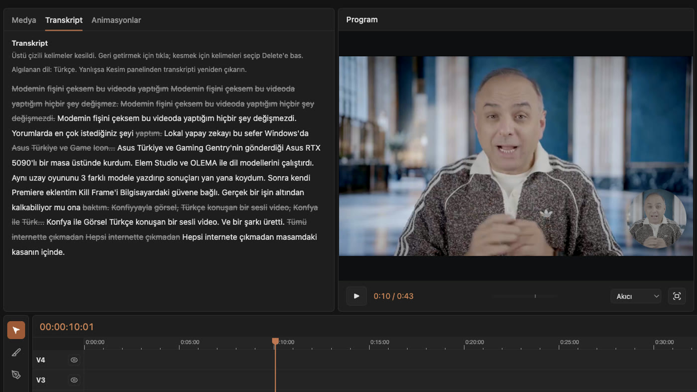
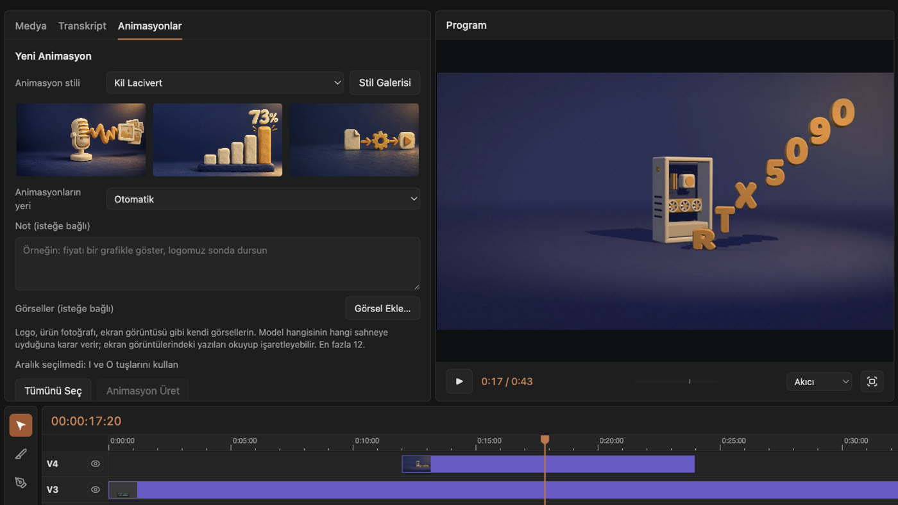
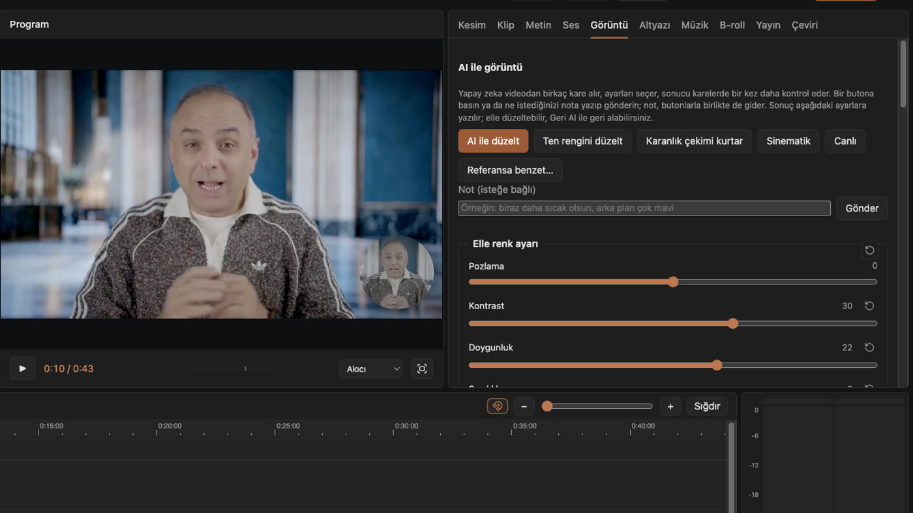
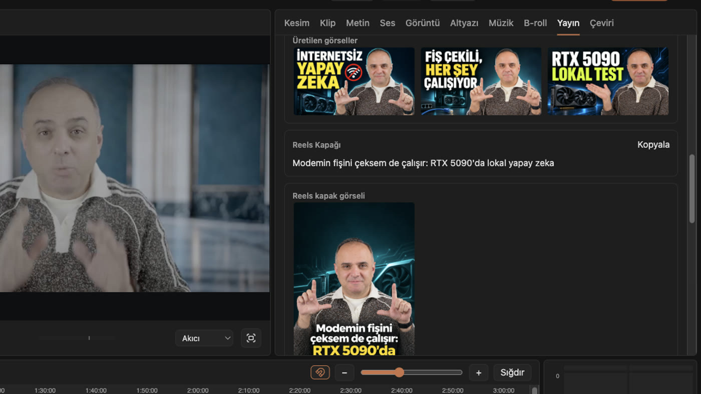

Kameraya konuş.
Bitmiş videoyu al.
Kilnframe Desktop kaydını okur, duraksamaları ve iki kez söylediğin cümleleri keser, anlattığına uygun animasyonlar yazar, görüntüyü ve sesi ayarlar; altyazı, Shorts ve thumbnail hazırlar. Her şeyde son söz senin.
Kayıttan sonraki iş, senin yerine yapılır.
Her adım yapıldığı yerde görünür; hepsini değiştirebilir ya da geri alabilirsin.
Kesimi senin yerine yapar.
Konuşman kendi bilgisayarında yazıya dökülür. Duraksamalar, ııı'lar ve iki kez söylediğin cümleler bulunup kesilir; emin olmadıklarını sana sorar.
Transkriptte bir kelimeyi sil, videodan da silinsin.
Yanlış bir kelime mi söyledin? Doğrusunu yaz, kendi sesinle okunsun.
Animasyonları yazar.
Bir aralık seç, Kilnframe anlattığın konuya uygun başlıklar, grafikler ve sahneler yazsın: 3D, parçacık efektleri, kendi kendine çizilen çizgiler ya da kinetik yazı.
100'den fazla denenmiş stil; her birinin karesine oturan kendi sesleri var.
Tek tıkla renk ve ses.
AI renk ayarı ten rengini düzeltir, karanlık çekimi kurtarır, sinematik ya da canlı görünüm verir, iki kamerayı eşitler. Gürültü temizleme, YouTube'a uygun ses ve kanal kanal mikser.
İstersen renk eğrileri, LUT ve bütün ayarlar elle.
Ekran dersleri için.
Ekran kaydını ve kamerayı sesinden eşleştirir, yüzünü köşeye koyar. Yazı yazdığın ve menü açtığın yere yakınlaşır.
Kurulum ve yükleme beklemeleri kesilmek yerine hızlanır.
Paylaşmaya hazır.
Tek tıkla altyazı, başka dillere çeviri, en güçlü anlardan dikey Shorts ve Reels; başlık, bölümler, thumbnail ve üzerinde yazısıyla Reels kapağı.
YouTube, Shorts, Reels ve TikTok için dışa aktarım, ekran kartınla.
Üç dakikada bütün paneller.
Kesim, animasyon, görüntü, ses, dersler, yayın: bütün uygulama adım adım.
Bilgisayarında kalır.
Yazıya dökme, kesim, işleme ve dışa aktarma senin bilgisayarında yapılır. Yapay zeka işleri yalnızca gereken metin ve karelerle senin seçtiğin modele gider.
Tek fiyat, bütün özellikler.
Önce 30 gün her şeyi dene. Karar verene kadar kart istemez.
- Bütün özellikler, iki bilgisayarda
- Abonelik sürdükçe yeni sürümler dahil
- 14 gün koşulsuz iade
- Yapay zeka işleri kendi model aboneliğin ya da anahtarınla çalışır, ücretini sağlayıcısı alır
Denemeden önce.
Yapay zeka için ayrıca para ödeyecek miyim?
Claude ya da ChatGPT aboneliğin varsa hayır: onunla giriş yaparsın, Kilnframe onu kullanır. Yoksa bir API anahtarı girer, kullandığın kadarını sağlayıcısına ödersin.
Deneme bitince ne olur?
Projelerini açıp düzenlemeye devam edebilirsin. Dışa aktarma ve yapay zeka işleri için abonelik gerekir.
Videolarım bir yere yükleniyor mu?
Hayır. Videoların bilgisayarında kalır. Seçtiğin modele yalnızca bir yapay zeka işinin gerektirdiği metin ve küçük kareler gider. Uygulamadan çıkan her şey gizlilik politikasında yazılı.
Lisansımı başka bilgisayara taşıyabilir miyim?
Evet. Uygulamanın içinden bu bilgisayarı serbest bırak, anahtarı öbür bilgisayarda etkinleştir.
Hangi bilgisayarlarda çalışır?
Mac (Apple Silicon), Windows (x64 ve Arm) ve Linux (x64 ve Arm). 16 GB bellek önerilir. Dışa aktarma NVIDIA, AMD, Intel ya da Apple ekran kartını kullanır.
Güncellemeler nasıl geliyor?
Uygulama yeni sürümü kendisi bulur ve güncellemeden önce sorar.
Premiere Pro, Resolve ya da FilmCraft mı kullanıyorsun?
Ücretsiz ve açık kaynak Kilnframe eklentisi, animasyonları ve müziği zaten kullandığın editöre getirir.
İlk deneyenlerden ol.
Kilnframe Desktop çok yakında Mac, Windows ve Linux için çıkıyor. E posta adresini bırak, çıktığı gün yazalım.